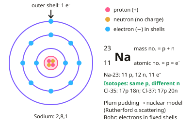

GCSE Chemistry · Topic 1
Atomic structure and the periodic table
Atomic structure and the periodic table is where GCSE Chemistry begins: what atoms are made of, and how that explains the way elements behave.
We will look at protons, neutrons and electrons, isotopes and relative atomic mass, and how scientists built up our model of the atom from Dalton to Chadwick.
Then we explore the periodic table, its groups, metals and non-metals, transition metals, and how to separate mixtures.
- 10 subtopics
- 553 questions
- Free: 1.1 notes and 10 questions
In this topic
- 1.1Atoms, elements and isotopesFree below · 58 questions
- 1.2The periodic table and groupsOpen in Full Marks · 67 questions
- 1.3Development of the model of the atom (Dalton to Bohr and Chadwick)Open in Full Marks · 66 questions
- 1.4Electronic structure and electron configurationsOpen in Full Marks · 66 questions
- 1.5Relative atomic mass and isotopic abundanceOpen in Full Marks · 31 questions
- 1.6Development of the periodic table and metals versus non-metalsOpen in Full Marks · 71 questions
- 1.7Transition metals: properties and usesOpen in Full Marks · 22 questions
- 1.8Mixtures and separation techniques (filtration, crystallisation, simple and fractional distillation)Open in Full Marks · 77 questions
- 1.9Group 1: the alkali metals and their reactionsOpen in Full Marks · 35 questions
- 1.10Groups 7 and 0: the halogens, displacement reactions and the noble gasesOpen in Full Marks · 60 questions
1.1 · Free notes
Atoms, elements and isotopes

Key points
- An atom has a small, dense nucleus containing protons (positive) and neutrons (no charge), surrounded by electrons (negative) in shells.
- Atomic number = number of protons = number of electrons in a neutral atom. Mass number = protons + neutrons.
- Isotopes are atoms of the same element with the same number of protons but different numbers of neutrons.
- Electronic structure is written as the number of electrons in each shell, e.g. sodium is 2,8,1; outer shell electrons determine chemical properties.
- The plum pudding model (a ball of positive charge with electrons embedded in it) was replaced after Rutherford's alpha particle scattering experiment showed a small, dense, positive nucleus; Bohr proposed electrons orbit in fixed shells.
In more detail
- Relative charges and masses: proton +1, mass 1; neutron 0, mass 1; electron −1, mass very small (about 1/2000).
- Worked example: ²³₁₁Na has 11 protons, 11 electrons and 23 − 11 = 12 neutrons.
- Ions: a sodium ion Na⁺ has lost one electron, so it has 11 protons and 10 electrons; an oxide ion O²⁻ has gained two, so it has 8 protons and 10 electrons.
- Element vs compound: an element contains only one type of atom; a compound contains two or more elements chemically combined in fixed proportions.
Practice
Atoms, elements and isotopes: 10 questions
Pick an answer to check it, or open the answer for the explanation.
1. What is the atomic number of an element?
- Protons + neutrons
- The number of protons
- The number of neutrons
- Electrons + neutrons
Show answer
B: The number of protons. Atomic number equals the number of protons, which equals electrons in a neutral atom.
2. Isotopes have the same number of ___ but different numbers of ___.
- Protons; neutrons
- Neutrons; protons
- Electrons; protons
- Protons; electrons
Show answer
A: Protons; neutrons. Isotopes vary only in neutron number.
3. Sodium's electronic structure is 2,8,1. How many electrons are in its outer shell?
- 1
- 2
- 8
- 11
Show answer
A: 1. The last number in the structure is the outer shell.
4. Which experiment led to the nuclear model of the atom?
- Rutherford's alpha particle scattering experiment
- Mendeleev's periodic table
- Dalton's billiard ball model
- Boyle's gas law experiments
Show answer
A: Rutherford's alpha particle scattering experiment. Most particles passed through the gold foil, but some deflected, showing a small dense positive nucleus.
5. What is true about a neutral atom?
- Protons = neutrons
- Protons = electrons
- Neutrons = electrons only
- Protons = mass number always
Show answer
B: Protons = electrons. A neutral atom has equal numbers of protons and electrons.
6. Which particle has virtually no mass?
- Proton
- Neutron
- Electron
- Nucleus
Show answer
C: Electron. Electrons have negligible mass compared with protons and neutrons.
7. A chlorine atom has atomic number 17 and mass number 35. How many neutrons does it contain?
- 17
- 18
- 52
- 35
Show answer
B: 18. Neutrons = mass number − atomic number = 35 − 17 = 18. 17 is the number of protons and electrons.
8. Aluminium has atomic number 13. What is its electronic structure?
- 2,8,2,1
- 2,11
- 2,8,3
- 2,3,8
Show answer
C: 2,8,3. 13 electrons fill shells in order: 2 in the first, 8 in the second, leaving 3 in the third shell: 2,8,3.
9. What are the relative charge and relative mass of a neutron?
- Charge 0, mass 1
- Charge +1, mass 1
- Charge 0, mass 0
- Charge −1, mass 1/1836
Show answer
A: Charge 0, mass 1. A neutron is neutral (charge 0) and has the same relative mass as a proton (1). Electrons are the particles with negligible mass.
10. In Rutherford's experiment most alpha particles passed straight through gold foil. What does this show?
- Atoms are mostly empty space
- Electrons are positive
- Gold atoms are neutral
- Atoms have no nucleus
Show answer
A: Atoms are mostly empty space. Most particles went undeflected, so most of an atom is empty space. The nucleus must be very small.
Keep going in Full Marks
Full Marks has 58 questions on Atoms, elements and isotopes (48 more than here), set out in practice levels. You also get notes and 3D models for all 10 subtopics of Atomic structure and the periodic table, plus games, timed exams and past papers.
On your exam board
- AQATopic 1: Atomic structure and the periodic table
- OCR ATopic C1: Particles, Topic C2: Elements, compounds and mixtures, Topic C4: Predicting and identifying reactions and products
- OCR BTopic C2: Chemical patterns, Topic C5: Chemical analysis
- EdexcelTopic 1: Key concepts in chemistry, Topic 2: States of matter and mixtures, Topic 5: Separate chemistry 1, Topic 6: Groups in the periodic table
- CambridgeTopic 2: Atoms, elements and compounds, Topic 8: The Periodic Table, Topic 12: Experimental techniques and chemical analysis